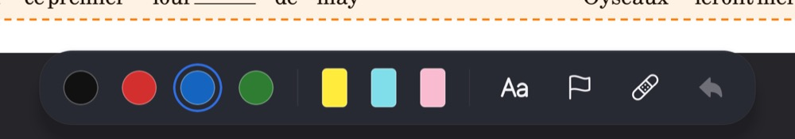
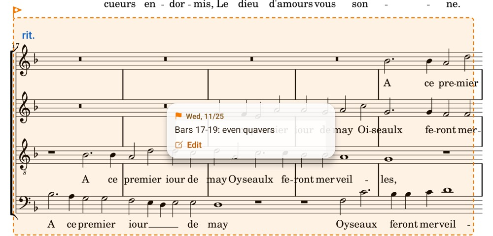
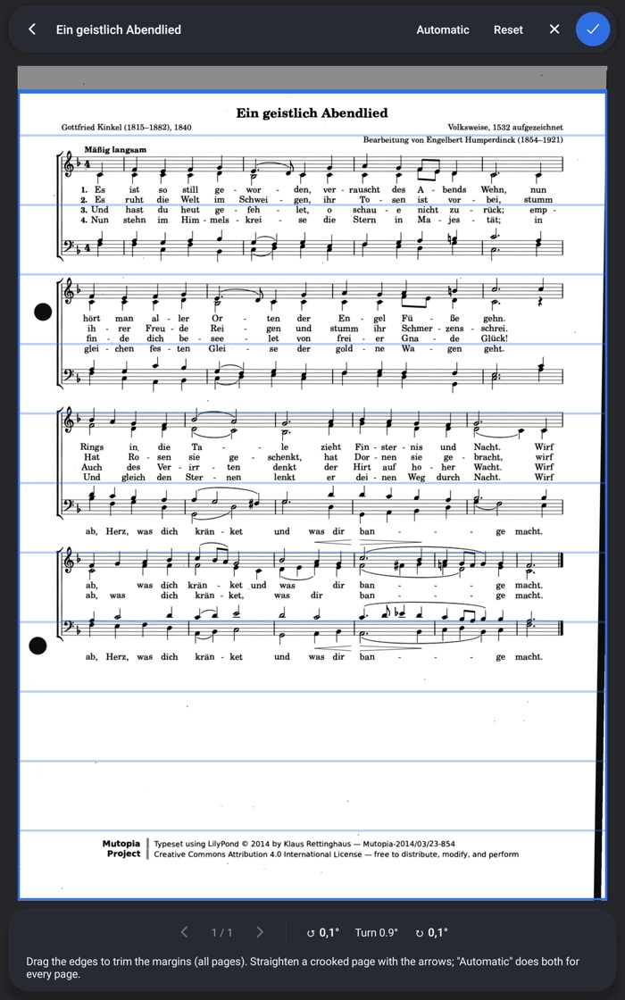
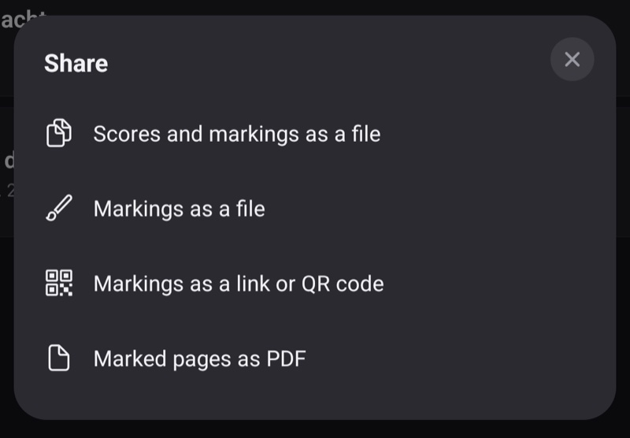
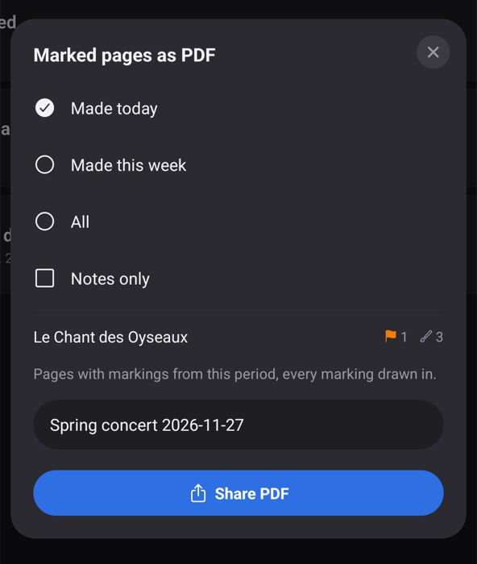
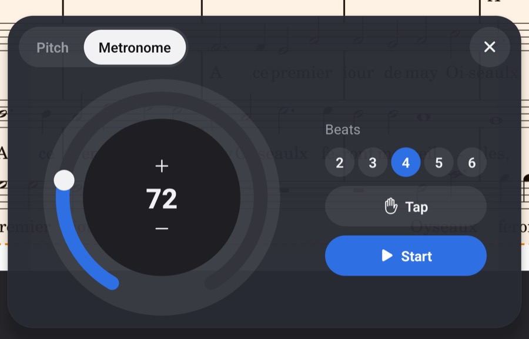

User guide
Stavora works without accounts or setup. Here is everything it does, including the things you might not spot at first. Questions or feedback: info@stavora.app.
Importing scores
In the library, tap Import and pick PDF files. You can pick several at once, and they all come into the library together. On Android, press and hold the first file, tap the others and tap Select. The back gesture leaves the picker.
Cloud services
Import shows the device's own folders and every cloud service whose app is installed, such as iCloud Drive, Google Drive, Dropbox or OneDrive.
On iPad and iPhone, iCloud Drive is there from the start. Other services are turned on in the Files app: open the ••• menu of the sidebar, choose Edit Sidebar and switch the service on under Locations. On Android, they are in the file picker already. Folders shared with you are under Shared with me in Google Drive.
From another app
Open a PDF in Drive, Dropbox, your email or Files, for example, and choose Open in app or Share → Stavora. On Android, you can share several PDFs at once. The score opens right away.
A whole folder at once
Bring the folder in as a ZIP file. Google Drive and Dropbox pack a folder into a ZIP when you download it, and in the Files app you can choose Compress. The scores come in the folder's order, and the app offers to make them a setlist named after the folder.
Importing the same file again makes no copy: it opens the score already in the library, markings and all.
Reading
- Turning pages: tap the right or left edge of the page, or swipe sideways. The width of the edges can be adjusted in the settings.
- Tools: tap the middle of the page. All the pages show along the bottom, and you can jump straight to any of them.
- Zoom: pinch. Scroll a zoomed page with one finger, and double-tap to see the whole page again.
- In landscape a tablet shows two pages side by side. On a phone the page fills the width and turns move on one line of music at a time.
- Closing: the back arrow, or a long swipe up or down. Opened again within two hours, a score carries on from the same page; later it starts from the beginning.
- Pedals: Bluetooth page-turn pedals and keyboards work without setup: arrow keys, Page Up/Down, Space and Enter.
The app remembers where you left off, and the screen stays on while you read.
Markings

Pen mode opens from the pen button in the toolbar, or by holding a finger still on the page for a moment. You get a pen in four colours, a highlighter, text (Aa), an eraser and undo. You can change pages in pen mode too. Close it with ✓.
Text
Choose Aa and tap where you want the text. Type straight onto the score. Tap existing text to edit it, and drag it to move it.
Notes
In pen mode, choose the flag and drag a box around the passage. Its bubble opens straight away: add a note, such as “breathe here” or “even quavers”. The note shows on the page beside the flag; turn off the pin in the note window’s corner and it shows only when the flag is tapped. Tapping a box or its flag opens the bubble again, to read or edit the note. While reading, a box with a note opens its bubble at the page’s edge too; elsewhere a tap at the edge turns the page. On an iPad the Apple Pencil writes into the note by hand. Grab a box to move it, or by an edge or a corner to resize it.
When a passage carries on to the next line or page, choose Continue the marking in the bubble and draw the next box. The boxes share one note, and the later ones show an arrow instead of the flag. Undo and the ✕ keep the passage together: remove its first box and the next one takes the flag.
The library’s Notes button lists the scores with notes and opens each at the right page. Once a passage is practised, remove its box with the ✕ in the corner, or all notes at once with Clear notes.
With a stylus, no pen mode needed
With an active stylus (Apple Pencil, Tab Pen and the like) you can write straight onto the page while reading: the stylus draws and a finger turns the page. An Undo button appears for a moment to take back the last marking. In pen mode you can set Only the stylus draws, so a finger never draws by accident.
Markings are saved separately, and the original PDF is never changed.

Crop and straighten
When importing, the app crops away the empty margins and straightens pages that were scanned crooked. Notes written in the margins are kept, and hole punches and specks are left out.
Adjust the crop by hand from the crop button in the toolbar. Drag the edges: the same crop applies to all pages. Turn a crooked page with the arrows, 0.1° at a time. Automatic redoes the crop and straightening, and Reset shows the whole page. If you don't want the crop on import, you can turn it off in the settings.

Setlists
Open Setlists in the library and choose New setlist. Tap the pieces in the order they are sung. Change the order by dragging the handle on the right of a row. You can also add scores to a setlist from the library: one by pressing and holding it, several at once with Select several.
When you tap Play, the pieces run on like one booklet: after the last page comes the start of the next piece. On a piece's last page the corner shows what comes next, and the strip at the bottom or the title in the top bar lets you jump to any piece in it. Outside a setlist the title opens any score in the library, with a search.
Documents
A setlist can keep documents such as instructions. When you import a Drive folder as a ZIP, its Word, text and picture files become the setlist’s documents; documents, PDFs too, can also be added from the setlist’s documents button. Word, PDF, picture and text files show in the app; other formats open in another app. Documents are not pieces, so playing the setlist skips them, and they go along when you share the setlist with its scores.
Sharing with a choir or band

Open a setlist and tap Share. Choose what goes in the package:
- Scores and markings as a file: the PDFs, the pieces' titles, crops and your markings in one ZIP file. For the start of a season, for example in the choir's Drive.
- Markings as a file: a small update for those who have the scores already, as a ZIP file.
- Markings as a link or QR code: a small update, this evening’s passages for example. Choose which markings go: those since this setlist was last shared, today’s, this week’s or all. Before sharing you see which pieces get markings and notes, and they are added to the recipients’ earlier markings. The setlist’s running order stays as it is. Then Share the link, in WhatsApp say – tapping it opens Stavora and brings the markings in – or Show the QR code at the rehearsal: the singers scan it with their phone cameras, and nothing goes over a network. A season’s markings may not fit a link; share them as a file then.
- Marked pages as PDF: only the pages with markings, the markings drawn in, as one PDF that opens on any device – no Stavora needed. Choose the period (today, this week or all), whether every marking goes or Notes only, and the file’s name. A piece that is twice in the setlist comes once. A single score shares the same from its menu in the library.
The others open the ZIP file with Import or Share → Stavora. The setlist appears in the same order, and a later package updates the same list.
Your markings come in as a layer of their own. The next package replaces them, and everyone's own markings stay. Scores are recognised by the file's contents, so the markings land in place when everyone has the same PDF, for example from the same package or Drive folder.
The package goes only where you send it. Stavora has no server and no accounts.

Pitch and metronome
Tap ♪ in the score’s top bar. The panel has two tabs:
- Pitch: tap a key and the note sounds for a moment, or hold it and the note sounds for as long as you hold. Change the octave with − and +.
- Metronome: set the tempo by turning the ring with a finger (clockwise is faster; 120 is at the top) or by tapping a place on it, a beat at a time with − and +, by typing it into the number, or by tapping Tap in time. Choose the beats in a bar; tap the chosen one again and no beat is accented.
Each piece remembers its own tempo and beats: the metronome opens on a score in its tempo, and in a setlist the ticking changes to the next piece's tempo. A piece with no tempo set yet starts from the last one used.
A tap on the score closes the panel. The metronome keeps ticking until you stop it or close the score, and ♪ stays lit meanwhile.
The sounds play with the silent switch on too. Stavora does not use the microphone.

Library
In the library you can search scores by name and sort them alphabetically or by when they were last opened. Thumbnails show the page cropped as it is read. The button next to the search field shows the scores as a list instead of thumbnails. A long library in A–Z order has the alphabet down its right edge, in the thumbnails and the list alike: tap a letter or slide a finger over them.
Press and hold a score to rename it, add it to a setlist or delete it. Deleting a score deletes its markings too.
Several at once
Choose Select several from the same menu and tap the scores. The selected ones can be deleted or added to a setlist, a new one too. Scores already in the setlist are not added twice.
On a phone the search, the flag and the button for the order and the view are at the bottom of the screen, in reach of the thumb.
The settings (the gear) include the theme (light, dark or as the device), the language, the colour around the page, the tap-to-turn edges and the pen options.
Export PDF with markings (press and hold a score) makes a PDF of the score with your markings in it, to print or to send to someone without Stavora.
Backup and a new device
Choose Settings → Backup → Make a backup. Scores, markings, setlists with their documents, and settings are packed into one ZIP file, which you can save to Files, iCloud Drive or Google Drive, for example.
To restore, import the ZIP with Import. A restore only adds the scores and setlists the library is missing; nothing already in the library is changed or deleted.
An iCloud backup of an iPhone or iPad includes Stavora's data automatically, so it comes back when you set up a new device from that backup. The data does not sync between devices. Android's automatic backup is limited to a small size, so make a backup yourself there.